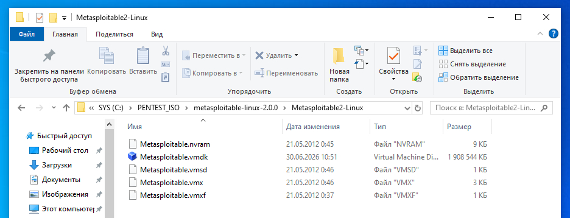
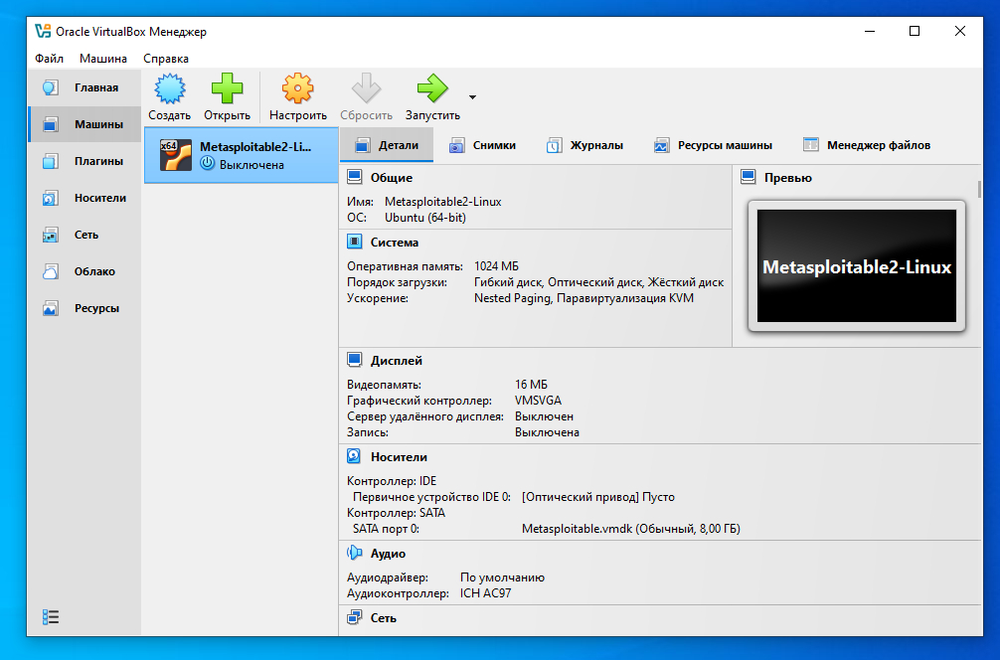

Порядок работы такой:
Для взлома нам необходимо две виртуальные машины: первая Metasploitable 2 и вторая виртуальная машина это Kali Linux.
По адресу https://download.virtualbox.org/virtualbox/7.2.10/ загружаем файл VirtualBox-7.2.10-174163-Win.exe - это установочный файл VirtualBox для машины с ОС Windows. Загрузили, устанавливаем на свою ОС Windows. Для данной статьи я взял версию VirtualBox 7.2.10 но я рекомендую загружать самую последнюю версию VirtualBox по ссылке https://download.virtualbox.org/virtualbox/ - это нужно для того, что далее мы будем загружать из интернета виртуальную машину Kali Linux - то есть файлы с ОС Kali Linux предназначенные для запуска в среде VirtualBox - и что бы последняя версия Kali Linux которую вы возьмете с интернета без ошибок работала на последней версии VirtualBox. К примеру, я взял последнюю версию на текущий момент kali-linux-2026.1-virtualbox-amd64.7z - архив с ВМ Kali Linux и ВМ с ошибками работала на версии VirtualBox 7.1.10 и уже есть VirtualBox 7.2.10, но я решил воспользоваться версией VirtualBox 7.1.10. Ошибки в работе проявлялись в том что гостевые дополнения не работали - наблюдалось неправильное разрешение рабочего стола Kali 2026.1 в VirtualBox 7.1.10, так же не работало копирование из виртуальной машины на хост, и из хоста в виртуальную машину - "копи-пасте" текста не работало. После замены VirtualBox 7.1.10 на последнюю версию VirtualBox 7.2.10 ВМ Kali 2026.1 начала работать без ошибок - гостевые дополнения работали без ошибок. Таким образом вывод, и я рекомендую - если вы загружаете последнюю версию ВМ Kali Linux - обязательно загрузите последнюю версию VirtualBox, иначе возможны аномалии в работе виртуальной машины.
Загрузим себе на локальный компьютер Metasploitable 2 и подключим в VirtualBox. Для этого зайдите на сайт: https://www.vulnhub.com/entry/metasploitable-2,29/ и найдите ссылку в разделе страницы Download, ссылка выглядит так:
https://download.vulnhub.com/metasploitable/metasploitable-linux-2.0.0.zip

То есть мы должны загрузить этот файл ахрива с сайта. После загрузки распакуем архив в удобное место.
Предположим, после распаковки архива у нас есть путь к файлам:
C:\PENTEST_ISO\metasploitable-linux-2.0.0\Metasploitable2-Linux\
И, соответственно, сама папка с распакованными файлами в проводнике выглядит так:

Metasploitable.vmdk — это виртуальный диск машины Metasploitable, то есть готовая уязвимая CTF/учебная система для практики пентеста. Именно этот файл мы будем подключать в VirtualBox для создания виртуальной машины.
Следующий шаг- запускаем VirtualBox и для начала создания виртуальной машины нажимаем кнопку "Создать".
Далее появиться окошно с названием "Создание виртуальной машины" и в этом окошке заполните информацию как на следующих трех скриншотах - а именно:


Далее в этом же окне после указания всех настроек нажимаем кнопку "Готово". В результате у нас будет созданная виртуальная машина как на скриншоте ниже:
